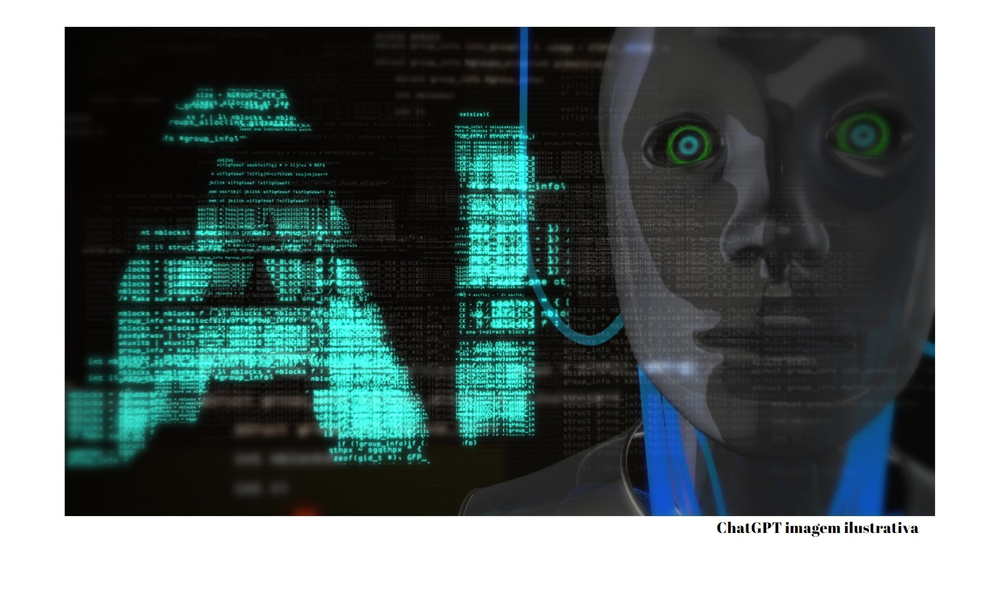

Três especialistas em IA sobre como o acesso à tecnologia estilo ChatGPT está prestes a mudar nosso mundo
O ChatGPT estourou no mundo da tecnologia, conquistando 100 milhões de usuários até o final de janeiro de 2023, apenas dois meses após seu lançamento e trazendo consigo uma sensação de mudança iminente. A tecnologia em si é fascinante, mas parte do que torna o ChatGPT excepcionalmente interessante é o fato de que, da noite para o dia, a maior parte do mundo ganhou acesso a uma poderosa inteligência artificial generativa que eles poderiam usar para seus próprios propósitos. Neste episódio do The Conversation Weekly, conversamos com pesquisadores que estudam ciência da computação, tecnologia e economia para explorar como a rápida adoção de tecnologias, na maioria das vezes, não conseguiu mudar os sistemas sociais e econômicos no passado – mas por que a IA pode diferente, apesar de suas fragilidades.
Passar apenas alguns minutos brincando com novos algoritmos de IA generativos pode mostrar o quão poderosos eles são. Você pode abrir o Dall-E, digitar uma frase como “dinossauro andando de moto por uma ponte” e, segundos depois, o algoritmo produzirá várias imagens mais ou menos representando o que você pediu. O ChatGPT faz praticamente o mesmo, apenas com texto como saída. Esses modelos são treinados em grandes quantidades de dados retirados da internet e, como explica Daniel Acuña , professor associado de ciência da computação da Universidade do Colorado, Boulder, nos Estados Unidos, isso pode ser um problema. “Se estivermos alimentando esses modelos com dados do passado e dados de hoje, eles aprenderão alguns vieses”, diz Acuña. “Eles vão relacionar palavras – digamos sobre ocupações – e encontrar relações entre as palavras e como elas são usadas com certos gêneros ou certas raças.”
O problema do viés na IA não é novo, mas com o aumento do acesso, mais pessoas estão usando e, como diz Acuña, “espero que quem estiver usando esses modelos esteja ciente desses problemas”. Com qualquer nova tecnologia, sempre existe o risco de uso indevido, mas essas preocupações geralmente são acompanhadas pela esperança de que, à medida que as pessoas tenham acesso a ferramentas melhores, suas vidas melhorem. Essa teoria é exatamente o que Kentaro Toyama , professor de informações comunitárias da Universidade de Michigan, estudou por quase duas décadas.
“O que acabei descobrindo foi que é bem possível obter resultados de pesquisa positivos, em que algum tipo de tecnologia melhoraria uma situação em um governo, escola ou clínica”, explica Toyama. “Mas era quase impossível pegar essa ideia tecnológica e fazer com que ela tivesse impacto em escalas mais amplas.” Por fim, Toyama passou a acreditar que “a tecnologia amplifica as forças humanas subjacentes. E em nosso mundo atual, essas forças humanas estão alinhadas de forma que os ricos fiquem mais ricos e a desigualdade continue crescendo.” Mas ele estava aberto à ideia de que, se a IA pudesse ser inserida em um sistema que tentasse melhorar a igualdade, seria uma excelente ferramenta para isso.
As tecnologias podem mudar os sistemas sociais e econômicos quando o acesso aumenta, de acordo com Thierry Rayna , economista que estuda inovação e empreendedorismo. Ele estudou como o acesso generalizado à música digital, impressão 3D, blockchain e outras tecnologias mudam fundamentalmente a relação entre produtores e consumidores. Em cada um desses casos, “cada vez mais as pessoas se tornaram prosumidoras, o que significa que estão ativamente envolvidas no processo de produção”. Rayna prevê que o mesmo acontecerá com a IA generativa. Rayna diz que “em uma situação em que todo mundo está produzindo coisas e as pessoas estão consumindo de outras pessoas, a questão principal é que a escolha se torna absolutamente opressora”. Uma vez que um sistema econômico atinge esse ponto, de acordo com Rayna, plataformas e influências se tornam os detentores do poder. Mas Rayna acha que, uma vez que as pessoas possam não apenas usar algoritmos de IA, mas também treinar seus próprios, “provavelmente será a primeira vez em muito tempo que as plataformas estarão realmente em perigo”.